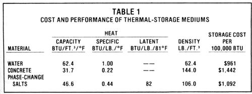
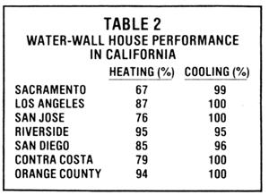
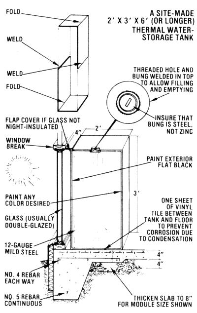

Build A Water-Wall Home
November/December 1983
The best way to incorporate thermal mass in a passive solar house may well be to...
by David Bainbridge
In many ways, passive solar homes are superior to those with active (mechanically assisted) heating and cooling systems. After all, passive solar systems don't rely on auxiliary energy sources to perform (so they'll work even when the power is off) . . . are generally simple and low in cost . . . combine energy collection and storage functions . . . have a long life . . . need little maintenance . . . and can often be built and installed by the home handy person, without special training or equipment.
But precisely because such "non-moving" systems have no pumps or controls to circulate warm or cool air, they typically rely on one key element: the thermal mass that stores and gives off absorbed heat or cold. A number of different items can be used to provide this energy-holding capacity, but just about the most effective and economical "To a water wall term that is a shorthand way of saying "contained water for thermal mass in passive solar homes").
Water-wall systems deserve much greater recognition than they've yet received . . . for a number of reasons. First, they can be very economical, especially since such units can often be installed-in either new or retrofitted homes-with standard construction techniques. Second, they are effective for both heating and cooling, particularly in areas with low nighttime temperatures. (Some heat-storage mediums, such as phase change salts, don't work for cooling.) Third, water walls can be attractively accented or practically invisible, as desired. (Did you notice the water walls when you glanced at the photos?) Fourth, water is a more efficient storage medium than are the other common sources of thermal mass. (See Table I for a comparison of water, concrete, and phase-change salts.) Consequently, water walls take up less room than other storage systems. This allows the house to offer outside views-avoiding the claustrophobic sensations possible with full masonry (Trombe) walls, which often completely block off south windows-and permits the easy installation and operation of movable window insulation. And finally, the fine radiating and temperature moderating qualities of water walls make for very comfortable homes.
START WITH THE (SOLAR) BASICS. . .
Building a water-wall structure can actually be a straightforward proposition. To begin with, the home should incorporate the basics of good passive solar design. The most obvious of these fundamentals is proper orientation: A major wall should face south. Likewise, most windows should be on the south, with some on the north . . . but comparatively few on the east and west. The dwelling should also have excellent insulation (a minimum of R-19 in the walls and R-30 in the ceiling) and weather stripping (infiltration can easily account for one half of the heat loss in a well-insulated but poorly weatherized building). The design should incorporate good summer shading, too . . . particularly on any east and west windows, which, if unshielded, can let in a surprising amount of the summer sun's radiation. Then again, the dwelling needs adequate natural, induced, or mechanical ventilation. And last, it needs double- or tripe-pane windows with some form of movable insulation . . . either thermal shutters or drapes.
If you construct a conventional house with these passive features and a water wall, the building should achieve very good thermal performance. The results of a study conducted for the California Energy Commission-shown in Table 2-document the performance of standard tract houses with water walls. And if the homes had the insu-levels recommended above they
would perform considerably better. _111 tact, my experience in Davis, California suggests that these calculations are even conservative, as water-wall dwellings there-without movable insulation on the windows-have met 80% of their own heating needs and have provided full cooling. Similar or better performance could be achieved in most of the growth (Sunbelt) regions of the United States .
. . . THEN ADD WATER
To figure out how much water storage a home needs, you first need to calculate its glazing requirements. The amount of south glass necessary for heating a passive solar house can be estimated from the anticipated climatic conditions, available sunshine, and the design and configuration of the building. As a rule of thumb, a well-insulated house should have an amount of south window area equivalent to 10% of the dwelling's floor space (a less heat-tight retrofit might need a glazing to- floor ratio of I to 4). From there, you can calculate how much water you'll need by allowing three to six gallons of liquid (four to eight in a retrofit) per square foot of south facing glass.
The configuration and placement of the water containers can be varied to suit a wide range of cases and functions. They'll work best for heating if they're placed directly in front of a south window and can absorb the maximum amount of sunlight. On the other hand, water walls best promote cooling if they're placed in a spot with good air flow.
And what should you use to store all this liquid? Well, while sealed culverts, 55-gallon drums, plastic jugs, large fiberglass tubes, and other containers have been used, my favorite option is the use of custom built modular steel water tanks. These containers are certainly the most attractive means for providing thermal storage. They're strong, durable, and relatively easy to make (see the accompanying illustration), and they're not difficult to install in most new or retrofitted solar houses (although extra floor bracing may be required if they're set on a suspended floor). In fact, the tanks can serve as window seats or counters, or be integrated into the basic house plan.
There are, I think, some specific advantages to working with smaller metal tanks, measuring about 1-112' X 2' X 6'. They're easy to handle, install, and-if need be drain and move. Since their weight can be distributed more evenly than that of "concentrated" large containers, they may not need as much bracing. They're also unobtrusive, and fit well into the house design.
Larger steel tanks, however, can also be used effectively. They are less expensive to build (running as little as 50d per gallon) . . . but, of course, they cost more to install. Often these larger tanks are used as a wall between south rooms, on the north side of a south room, or between a greenhouse and the main structure.
Whether you use large or small tanks, if their primary purpose is storing solar heat, they should be set where they receive the maximum amount of sunlight. The sides exposed to the sun should be painted black (surfaces facing the home's interior can be any color). You'll also want to set the tanks back from the windows a bit so you can easily install and remove nighttime window insulation.
Modular steel water containers can provide benefits other than simple passive solar heating. They can be set near a wood stove to help moderate its heat production. They exchange heat rapidly for quick nighttime cooling by natural or forced ventilation. And they can be coupled with an active solar system for augmented heating or cooling.
But that's not all. Water-wall vessels also provide an excellent emergency source of water for fighting fires (you'll probably need an auxiliary pump to help with this) and, if the liquid has been treated properly, an emergency source of drinking water.
To prevent corrosion and leaks, pressure test any tank before installing it, and use chemical antirust additives . . . sacrificial anodes similar to those used in water heaters . . . or interior zinc chromate, lead primer, or epoxy coatings. A specially formulated, potable antirust treatment called Aqua Clear is also available.
Better still, all of these worthwhile functions come at a very economical price. The cost of a house with such a space conditioning system is only $300 to $600 more than that of a conventional dwelling. (Actually, in California, thanks- to the state's solar tax credit, the house would cost $500 to $800 less than one with a conventional mechanical heating/cooling system.) Such initial expense would be paid back in a few years in reduced heating bills.
A BEAUTIFUL WATER-WALL HOME
An excellent contemporary example of a water-wall home is the 1,750-square-foot Morgan house. This beautiful $85,000 residence in Davis, California ends, once and for all, the rumor that a solar dwelling can't look good and still work well.
Brock Wag staff was the architect of this three-bedroom, two-bath, custom-designed abode. His clients wanted an attractive open home with a solar greenhouse. They got that . . . plus a very comfortable dwelling that has 100% natural cooling (in a part of California where summer temperatures can exceed 110 °F) and 80%-plus natural heating (in a 2,814-degree-day climate).
The house includes virtually all of the elements of good passive solar design (although the ceiling insulation was limited to six-inch bats--giving it a value of R- 19-by the depth of the rafters in the cathedral ceiling). Solar gain is through 180 square feet of south glass on the ground level and second story. Thermal storage is provided in the form of the 26,000-pound, tile-covered, insulated concrete slab and four steel water tanks (which hold a total of 14,000 pounds of liquid). Two of these are 2' X 2' X 5' sitting benches in the living room . . . one-in the den-is counter high, 2' X 2-1/2' X 11' . . . and a wall-sized 2' X 8' X 8' tank sits against the north side of the dwelling under the second-story balcony. Total storage capacity is almost 400,000 Btu, which provides carryover for several days of heating or cooling.
Summer cooling is also aided by effective control of solar gain, by way of wide overhangs and an arbor over the south deck. Night air circulation-assisted by the north south window orientation and open floor plan-is provided by both cross and stack ventilation. And a Casablanca fan produces extra cooling on the few days when the interior temperature reaches the high 70's.
The home's hot water-naturally-is also solar heated, by a two-panel thermosiphon system with a storage tank on the second floor. (The backup water- and space-heating systems are gas.)
The Morgan residence is located in Village Homes, a 200-unit solar development. Built in 1981, it represents the culminating step in an evolution of solar designs begun over seven years ago with the first units in Village Homes. And, in my opinion, it stands as irrevocable proof that passive solar design is the best way to beat high energy prices . . . with water walls leading the way.
EDITOR'S NOTE: Portions of this article were excerpted from David Bainbridge's. not yet available The Water Wall Solar Home Book.
David is a noted author and consultant on solar energy. (To contact Mr. Bainbridge about consulting services, write him at 1625 Curtis Street, Berkeley, California 94702.)
More information on water walls can be found in David's new $6.00, 34-page booklet on the topic. Other useful books on related subjects are his The Second Passive Solar Catalog ($12.50) ... Village Homes' Solar House Designs ($7.95) by David Bainbridge, Judy Corbett, and -john Hofacre . . . and So larizing Your Present Home ($24.95) edited by Joe Carter. All four publications can be ordered from the Passive Solar Institute, Dept. TMEN, P.O. Box 722, Bascom, Ohio 94809 for their list prices plus $1.50 shipping and handling for the first book and $1.00 for each additional title.
Denny Long (Passive Solar Development, Dept. TMEN, Route 1, Box 158, Woodland, California 94965) builds custom modular steel water tanks and distributes Aqua Clear for $15 a pint, postpaid (the usual treatment rate is five ounces per 100gallons of water).
 [1] The Morgan home in Davis, California has 14,000 pounds of thermal mass stored in its water walls, yet the containers blend in so well with the house design that they're barely visible. Can you spot the black south side of the bench-high water wall in the window? [2] The dwelling's largest steel tank, a 2' X 8' X 8' container, absorbs sunlight shining through the clerestory windows. [3] This window bench water tank can absorb both solar and wood-heat radiation. |
 |
 |
|
 |
|
|